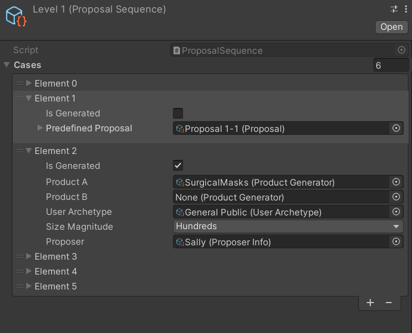

The Proposal Sequence Scriptable Object
In order to order Proposals into a level played in the game, a ProposalSequence scriptable object is used.

Each proposal in the sequence can be either generated or predefined, which is decided by the Is Generated option.
If Is Generated is selected, then some details need to be included for the game to generate a proposal during gameplay:
Product A- a ProductGenerator that will generate the proposed product of a proposal.Product B- (optional) a ProductGenerator that will generated the existing product of a proposal. If left empty,Product Awill be used to generate both proposed and existing products.User Archetype- a UserArchetype that will be used to generate the user group for the proposal.Size Magnitude- the rough size of the user group to be generated.Proposer- the ProposerInfo that represents the proposer NPC presenting the proposal.
If Is Generated is not selected, a predefined Proposal scriptable object needs to be put into Predefined Proposal.